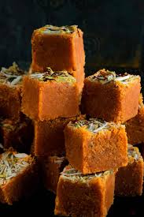

üç¨ Mohanthal Recipe

Ingredients
- 2 cups gram flour (besan)
- 1/2 cup ghee (clarified butter)
- 1/2 cup milk
- 1 cup sugar
- 1/2 cup water
- 1/4 tsp cardamom powder
- Chopped almonds and pistachios for garnish
- Optional: a few saffron strands
Instructions
- Mix besan with 2 tbsp ghee and milk. Rub it until crumbly. Let it rest for 10 minutes.
- Sieve the mixture for even texture.
- Heat remaining ghee in a pan and roast the besan mixture until golden brown and aromatic.
- In a separate pan, dissolve sugar in water and bring to a one-string consistency.
- Mix sugar syrup into roasted besan. Add cardamom and saffron. Stir quickly and pour into a greased tray.
- Sprinkle chopped nuts on top and press lightly. Let it cool and set.
- Cut into squares and serve.
Serve With
- Enjoy as a sweet dish during festivals or special meals
- Pairs well with savory snacks like fafda or ganthiya
üí° Tip: For a softer texture, adjust syrup consistency carefully. Stir continuously to prevent lumps.